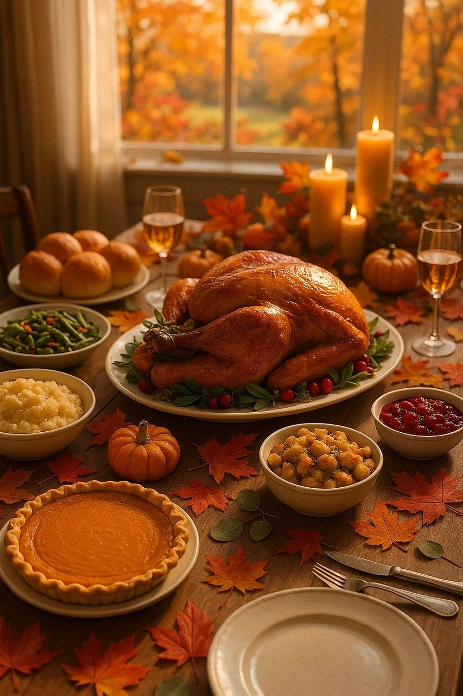
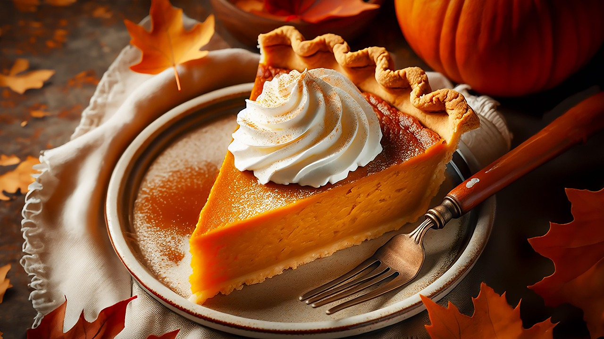
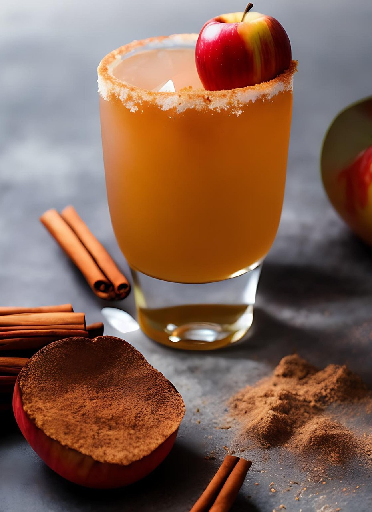

Main Dish

The centerpiece of any Thanksgiving feast is the main dish, traditionally highlighted by a golden, herb-roasted turkey. The turkey is often seasoned with fresh herbs, garlic butter, and aromatic vegetables, creating a rich aroma that fills the home. Some families include a honey-glazed ham for added variety, offering a sweet and savory contrast. For guests who prefer a plant-based option, stuffed squash or hearty vegetable roasts can bring just as much warmth and celebration to the table. The main dish sets the tone for the entire meal, bringing everyone together around a comforting and familiar tradition. -ChatGPT-
Sides
Thanksgiving sides are often the most beloved part of the meal, turning the dinner table into a colorful spread of comforting flavors. Creamy mashed potatoes served with warm gravy, savory stuffing filled with herbs and vegetables, and sweet potato casserole topped with marshmallows are classic favorites. Bright and crunchy dishes like green bean almondine or roasted Brussels sprouts add balance to the richer items on the plate. These side dishes not only complement the main entrée but also reflect the variety and creativity of each family’s unique holiday traditions. -ChatGPT-
Deserts
Desserts are the grand finale of Thanksgiving, offering cozy, nostalgic flavors that bring the feast to a sweet close. Pumpkin pie, with its spiced custard filling and flaky crust, is the star of many dessert tables. Pecan pie provides a rich, caramel-like sweetness, while apple crisp or apple pie adds warm, cinnamon-spiced comfort. For chocolate lovers, silky chocolate pies or gooey brownie bars are always welcome. No matter the dessert, this course gives everyone a chance to linger at the table a little longer and savor the season. -ChatGPT-
Beverages
Thanksgiving beverages help set the mood and complement the meal with festive flair. Warm drinks like hot apple cider or spiced tea bring cozy autumn flavor to the celebration. Cold options such as sparkling cranberry punch or flavored seltzers offer refreshing alternatives for all ages. Many families also serve coffee or herbal tea alongside dessert to finish the evening on a comforting note. Whether warm or chilled, the right beverages help tie the entire Thanksgiving experience together. -ChatGPT-